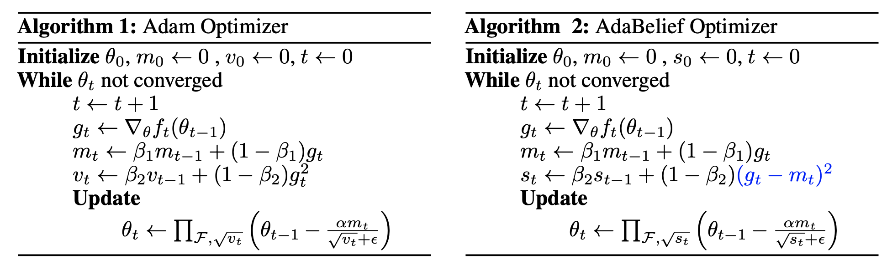
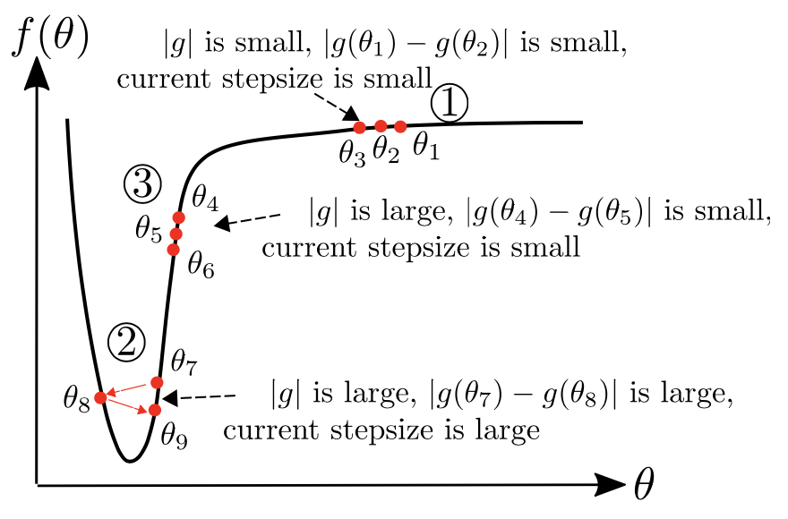
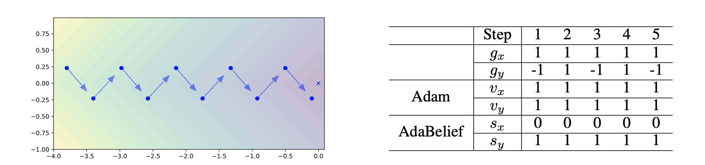

Most popular optimizers for deep learning can be broadly categorized as adaptive methods (e.g. Adam) and accelerated schemes
(e.g. stochastic gradient descent (SGD) with momentum). For many models such as convolutional neural networks (CNNs), adaptive
methods typically converge faster but generalize worse compared to SGD; for complex settings such as generative adversarial
networks (GANs), adaptive methods are typically the default because of their stability. We propose AdaBelief to simultaneously
achieve three goals: fast convergence as in adaptive methods, good generalization as in SGD, and training stability.
The intuition for AdaBelief is to adapt the stepsize according to the "belief" in the current gradient direction.
Viewing the exponential moving average (EMA) of the noisy gradient as the prediction of the gradient at the next time step,
if the observed gradient greatly deviates from the prediction, we distrust the current observation and take a small step;
if the observed gradient is close to the prediction, we trust it and take a large step. We validate AdaBelief in extensive
experiments, showing that it outperforms other methods with fast convergence and high accuracy on image classification and
language modeling. Specifically, on ImageNet, AdaBelief achieves comparable accuracy to SGD. Furthermore, in the training of
a GAN on Cifar10, AdaBelief demonstrates high stability and improves the quality of generated samples compared to a well-tuned
Adam optimizer.
Algorithm

Adam and AdaBelief are summarized in Algo.1 and Algo.2, where all operations are
element-wise, with differences marked in blue. Note that no extra parameters are introduced in AdaBelief. For simplicity,
we omit the bias correction step. Specifically, in Adam, the update
direction is \( m_t/\sqrt{v_t} \), where \(v_t\) is the EMA of \(g_t^2\); in AdaBelief, the update direction is \(m_t/\sqrt{s_t}\),
where \(s_t\) is the EMA (Exponential Moving Average) of \( (g_t - m_t)^2 \). Intuitively, viewing \( m_t \) as the prediction of \( g_t \), AdaBelief takes a
large step when observation \( g_t \) is close to prediction m_t, and a small step when the observation greatly deviates
from the prediction.
Why AdaBelief is better?
AdaBelief considers the curvature of loss function

An ideal optimizer considers curva- ture of the loss function, instead of taking a large (small) step where the gradient is large (small).
In region 3 , we demonstrate AdaBelief’s advantage over Adam in the “large gradient, small curvature” case. In this case, \( \vert g_t \vert \) and \( v_t \) are large,
but \( \vert g_t − g_{t-1} \vert \) and \( \vert s_t \vert \) are small; this could happen because of a small learning rate \(\alpha\). In this case, an ideal optimizer should increase its stepsize.
SGD uses a large stepsize (∼ \(\alpha \vert g_t \vert \)); in Adam, the denominator \( \sqrt{v_t} \) is large, hence the stepsize is small; in AdaBelief, denominator \( \sqrt{s_t} \) is small, hence
the stepsize is large as in an ideal optimizer.
AdaBelief considers the sign of gradient in denominator

Left: Consider \( f(x,y) = \vert x \vert + \vert y \vert \). Blue vectors represent the gradient, and the cross represents the optimal point. The optimizer oscillates in the y direction, and keeps moving forward
in the x direction. Right: Optimization process for the example on the left. Note that denominator \( \sqrt{v_{t,x}} = \sqrt{v_{t,y}} \) for Adam, hence the same stepsize in x and y direction; while \( \sqrt{s_{t,x}} < \sqrt{v_{t,y}} \) ,
hence AdaBelief takes a large step in the x direction, and a small step in the y direction.
Update direction in Adam is close to “sign descent” in low-variance case
Under the following assumptions: (1) assume \(g_t\) is drawn from a stationary distribution, hence after bias correction, \(\mathbb{E} v_t= (\mathbb{E} g_t )^2 + \mathbf{Var} g_t\). (2) low-noise assumption, assume \((\mathbb{E} g_t)^2 \gg \mathbf{Var} g_t\),
hence we have \(\mathbb{E}g_t / \sqrt{ \mathbb{E} v_t } \approx \mathbb{E} g_t / \sqrt{(\mathbb{E} g_t)^2} = sign( \mathbb{E} g_t)\). (3) low-bias assumption, assume \(\beta_1^t\) (\(\beta_1\) to the power of \(t\)) is small, hence \(m_t\) as an estimator of \(\mathbb{E}g_t\) has a small bias \(\beta_1^t \mathbb{E} g_t\).
Then
In this case, Adam behaves like a ``sign descent''; in 2D cases the update is \(\pm 45^{\circ}\) to the axis, hence deviates from the true gradient direction.
The ``sign update'' effect might cause the generalization gap between adaptive methods and SGD (e.g. on ImageNet). For AdaBelief, when the variance of \(g_t\) is the same for all coordinates, the update direction matches the gradient direction; when the variance is not uniform, AdaBelief takes a small (large) step when the variance is large (small).